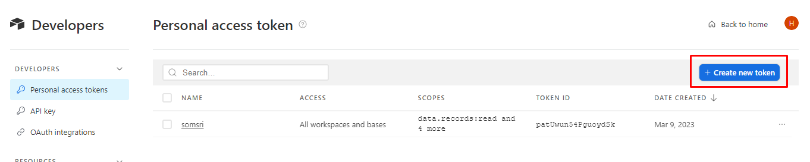
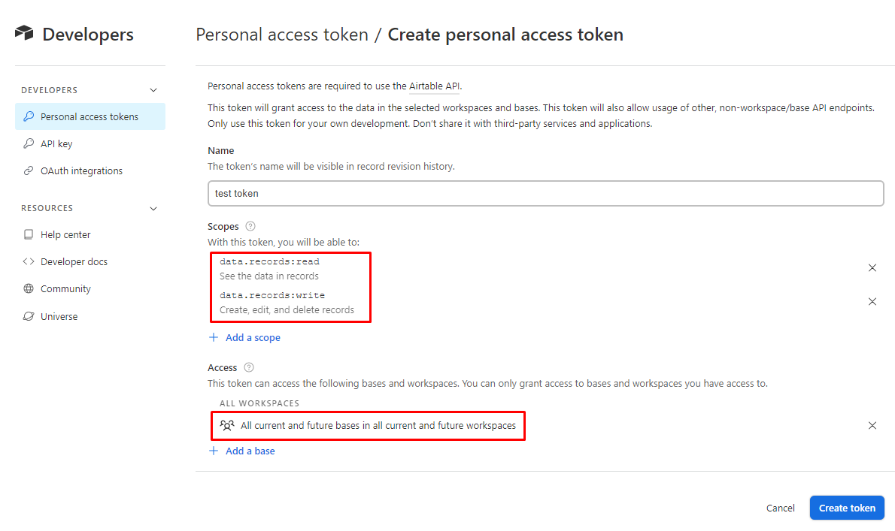
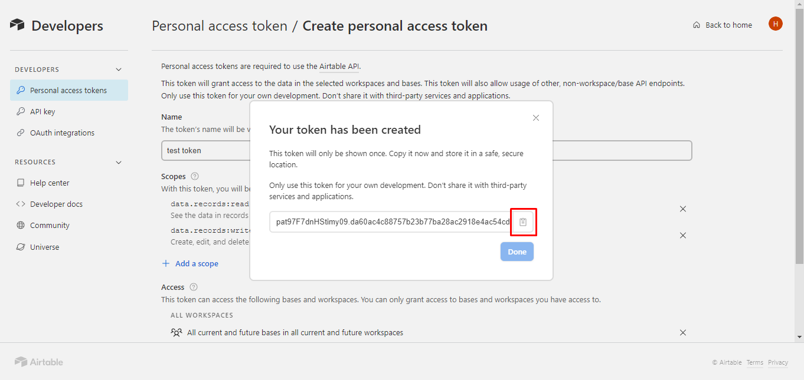

วิธีกำหนดข้อมูลให้ไปแสดงหน้า
Somsri Gantt
การ Create token นี้ไว้ใช้สำหรับ
ระบุตัวตนของผู้ใช้
ภายนอกเว็บของ Airtable ว่าใครเรียกใช้หรือแก้ไขข้อมูลภายใน Base , Table , Field , Record ที่บัญชีของผู้ใช้มีสิทธิ์เข้าถึง โดยสามารถเข้าไปที่
https://airtable.com/create/tokens
แล้วทำตามขั้นตอนดังนี้
1. คลิกที่ Create new token

2. กำหนดชื่อที่ต้องการ แล้วคลิกที่
Add a scope
กับ
Add a base
และเลือกหัวข้อตามในกรอบสีแดง หลังจากเลือกเสร็จให้คลิก
Create token

3. จะปรากฎหน้าต่างแสดง Token ขึ้นมา ให้คลิกที่ปุ่ม Copy ตามภาพ และคลิก Done ถือเป็นอันเสร็จสิ้นขั้นตอนการ Create token
